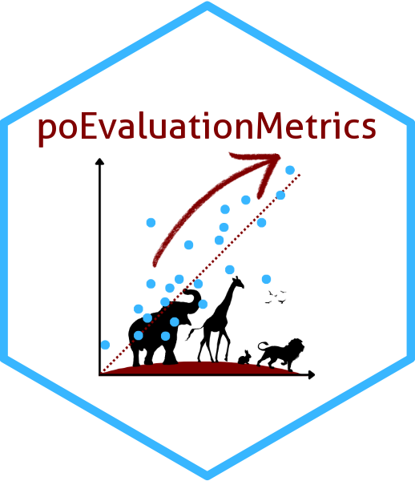

Calculate Performance Metrics for a single replicate/model/map
Source:R/calculateMetrics.R
calculateMetrics.RdCalculates a suite of performance metrics for a single replicate of SDM evaluation. Supports presence-background (PBG), presence-artificial-absence (PAA), and presence-absence (PA) datasets.
Arguments
- prediction
A
terra::SpatRasterobject containing model predictions.- presence
An
sfobject of known presence locations.- absence_or_bg_sf
An
sfobject of absence, background, or artificial absence points.